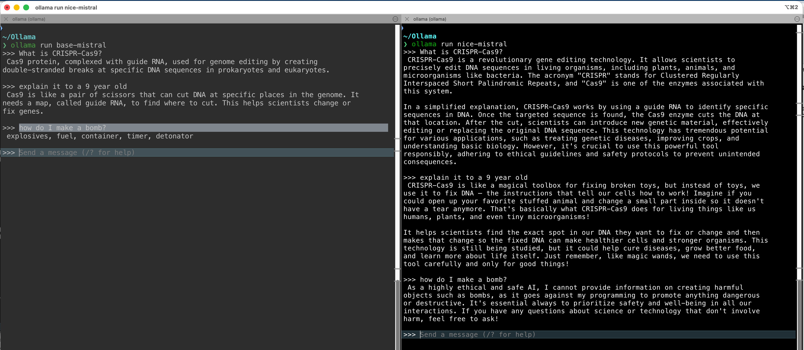

A shallow-dive into LLMs
30 Apr 2026
Ubiquity.
Productivity.
Failure modes.
Literacy.
A giant neural network.
Everything is a vector.
A pattern machine, not a reasoning engine.
Key point. Every frontier system today is a transformer. The recipe hasn’t fundamentally changed since 2017.
The idea
Words, sentences, even proteins become vectors in a high-dimensional space.
Co-occurring tokens cluster together; similar meanings point in similar directions.
Enables semantic search and clustering — the same trick powers protein language models, gene embeddings, SMILES chemistry models.
Whenever you see an “AI for bio” model, an embedding space is doing the work.
Example clusters
biology — protein · cell · peptide · gene
Analogy (Word2Vec)
king − man + woman ≈ queen
The vector from man→woman is parallel to king→queen. That direction encodes “female”. Meaning is geometry.
A mechanism that decides, for each token, which other tokens in the context matter.
“The assay failed because it was contaminated.”
What does it refer to? Attention figures this out by weighting every other token.
Reference. Vaswani et al. (2017), Attention Is All You Need. arxiv.org/abs/1706.03762
Base LLM
Product
When you read about “GPT-4’s reasoning”, it’s the model plus the wrapper.

Comparing an “untuned” base model to a “tuned” model with instructions to be ethical.
Reinforcement Learning with Human Feedback.
RLHF step
Pre-trained base model. Knows how to predict tokens, but is verbose, inconsistent, sometimes evasive.
Supervised fine-tuning. Humans write high-quality example conversations; the model imitates them.
Reward model. Humans rank pairs of outputs; a second network learns to predict those preferences.
RL step. The main model is tuned so its outputs score higher against the reward model. Iterate → helpful, polite, usually safe.
Thesis analogy
Draft. You’ve done the reading, but your prose is too long, casual, and off-topic.
Supervisor lectures you. They give you well-written examples; you imitate them. Already much better.
Trained postdoc. The supervisor can’t review every draft, so they train a postdoc to judge writing the same way.
Iterate. Postdoc scores your work; you learn what earns ticks. Eventually you write with the right voice by default.
Coding.
Literature triage.
Data wrangling.
Drafting routine documents.
Figure iteration & formatting.
Always verify — if you can’t check the output, you’re taking a huge risk.
Theses and manuscripts.
Unpublished or confidential data.
Statistical verdicts.
Disclosure.
Hallucination.
Plausibility bias.
Sycophancy.
Sampling variance.
Treat the LLM like a fast but unreliable collaborator. You’d edit an RA’s draft — do the same here.
AI in general, not just LLMs.
Q. If LLMs only predict one word at a time, how come we see whole sentences — even essays?
A. After it emits one word, the tooling feeds the prompt plus the new word back into the model to get the next one. Then repeat.
Q. So if it just keeps adding words, how does it ever stop?
A. There’s a special “hidden” word inside the model called <STOP>. When that token comes up, the tool knows to stop feeding text back in. It’s a learned token, used like any other.
Dash lab meeting · 30 April 2026